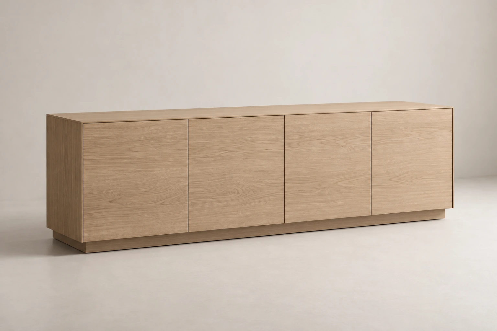
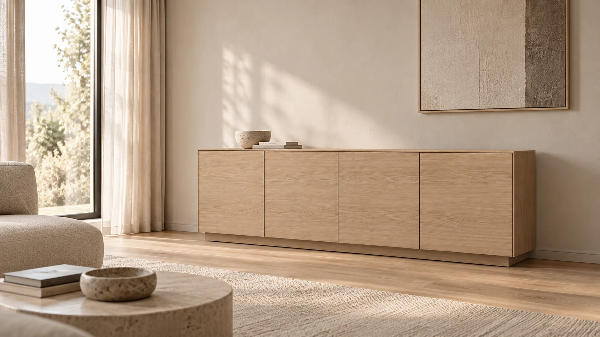
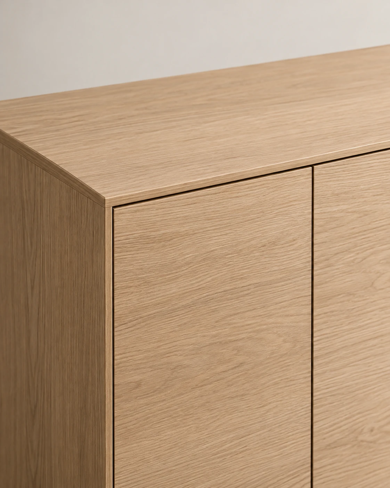
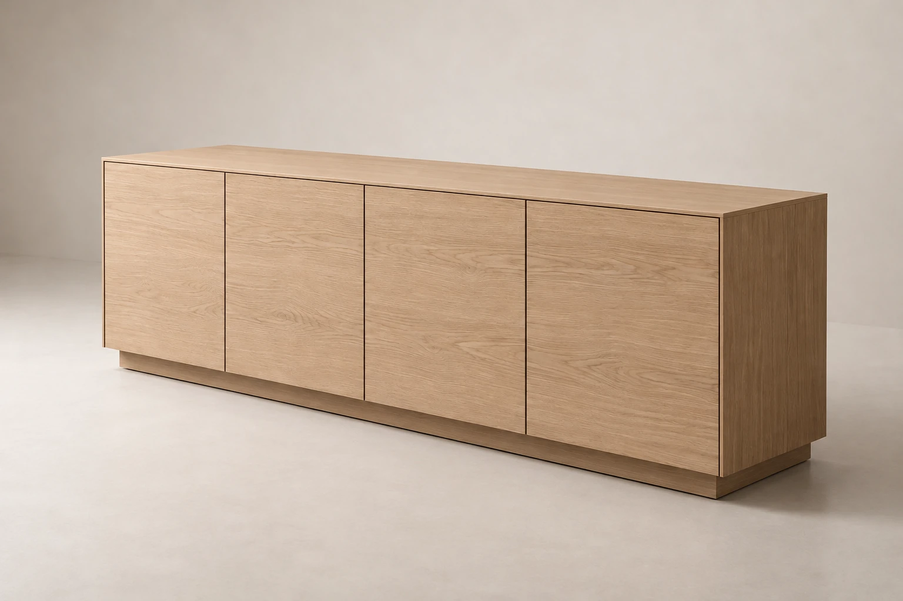

Комод
LINEA 01
Низкий комод с чистой геометрией и акцентом на горизонтальные пропорции.
- Размер / Ш × Г × В
- 1800 × 450 × 720 мм
- Отделки
- Светлый дуб
Тёплый орех
Мягкий greige
О модели
Спокойная геометрия
для повседневного хранения.
LINEA 01 построен на вытянутых горизонтальных пропорциях и простой геометрии. Низкий силуэт помогает сохранить ощущение свободного пространства, а лаконичный фасад не перегружает интерьер деталями.
Модель рассчитана на жилые пространства, где хранение должно оставаться функциональным, но визуально спокойным. LINEA 01 можно использовать в гостиной, спальне или просторной прихожей.


Характер / детали
Детали без
визуального шума.
В основе модели — ясные линии, широкие горизонтальные поверхности и спокойный ритм фасада. Отделка определяет характер предмета, сохраняя его нейтральность по отношению к окружающему интерьеру.
- 01 / Пропорции
- Вытянутый низкий силуэт.
- 02 / Фасад
- Чистая плоскость и спокойный ритм.
- 03 / Отделка
- Три нейтральных направления для разных интерьеров.
LINEA 01 / Данные модели
Характеристики
Размеры и отделки относятся к вымышленной демонстрационной модели.
- Тип
- Комод
- Модель
- LINEA 01
- Размер
- 1800 × 450 × 720 мм
- Ширина
- 1800 мм
- Глубина
- 450 мм
- Высота
- 720 мм
- Отделки
- Светлый дуб / Тёплый орех / Мягкий greige
- Назначение
- Хранение в жилом пространстве
Отделки
Три спокойных
направления.

Тёплый орех

Мягкий greige
Оттенки представлены как визуальные направления демонстрационного проекта.
Предмет / пространство
Предмет, который поддерживает пространство,
а не спорит с ним.
Назад в каталог ←
LINEA 01
Подойдёт ли модель
вашему пространству?
Вы можете перейти к демонстрационной форме обращения и указать интересующую модель. Форма показывает пример взаимодействия и не отправляет данные.